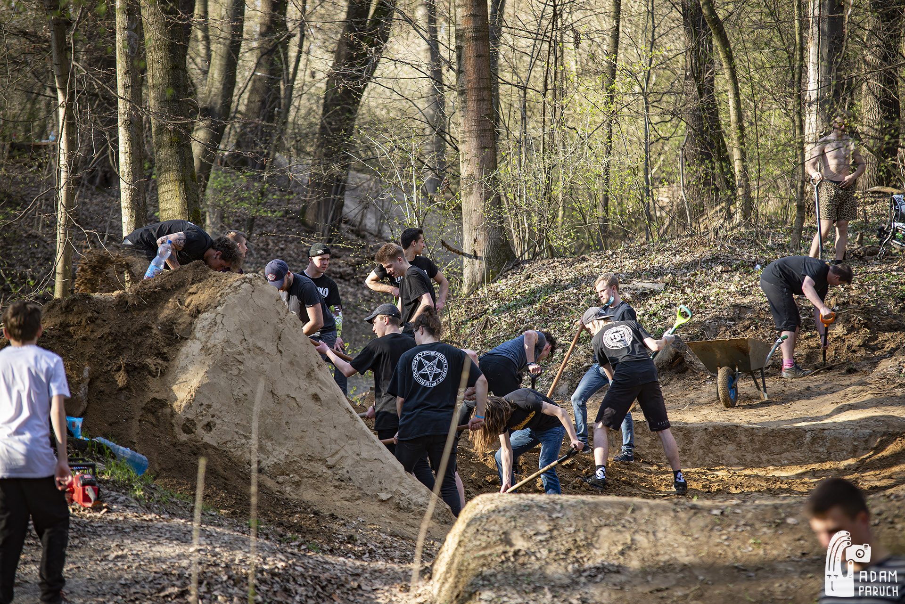
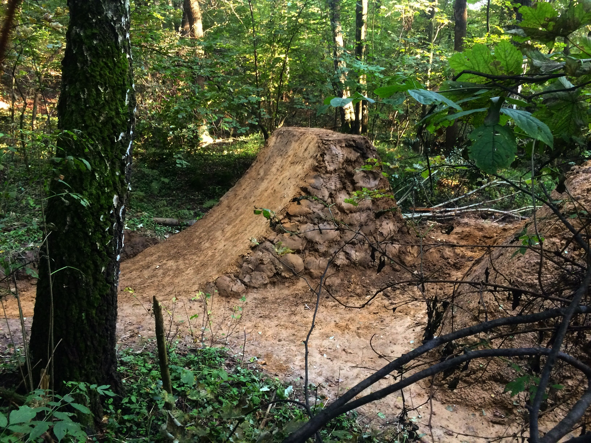
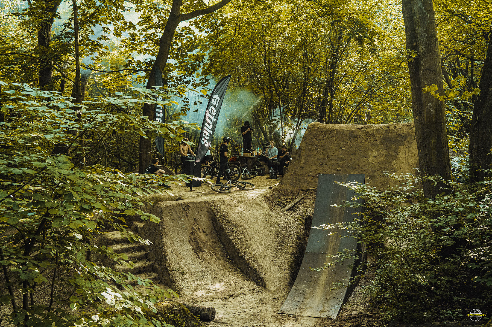
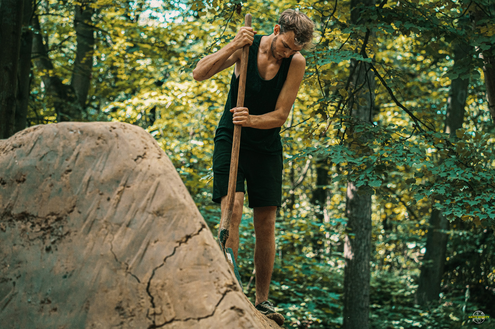
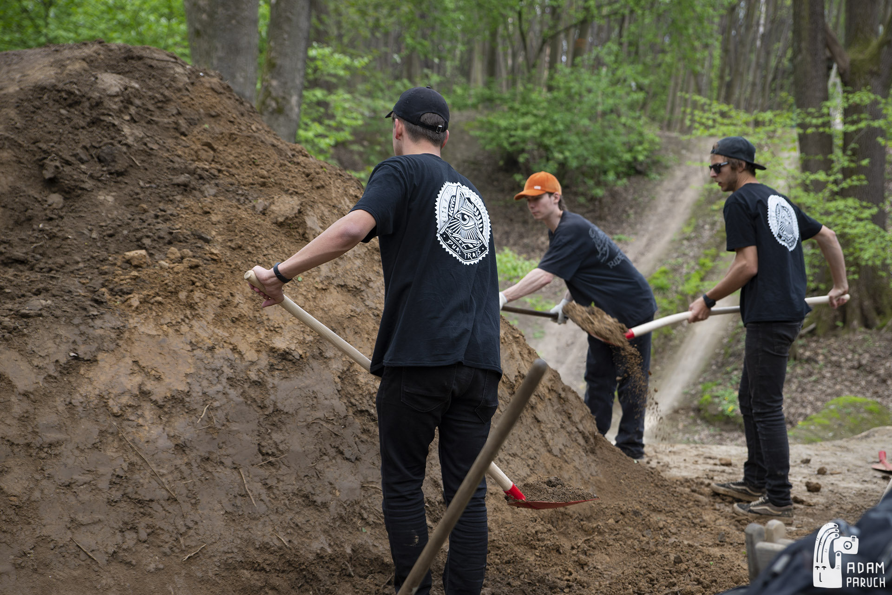
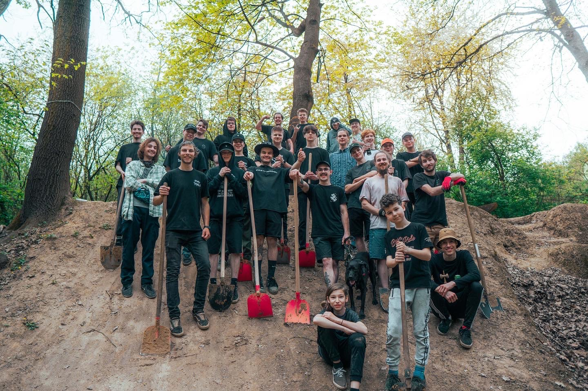

DUAL TRAILS, to bardzo wyjątkowe miejsce na mapie Polski. Ogromne zróżnicowanie przeszkód oraz gleba sprawiają, że ciężko wymarzyć sobie lepsze miejsce do jazdy. Lokalizacja jest ściśle tajna, jednak dobrze znana w środowisku rowerowym.

Trasy są budowane ręcznie bez użycia ciężkiego sprzętu. Wiele osób dołożyło do tego cegiełkę, a czas spędzony na kopaniu spokojnie można liczyć w tysiącach godzin.

Historia Dual Trails jest dłuższa niż mogłoby się wydawać. Trasy pojawiły się końcem XX wieku. Tor do dual slalomu był jednym z pierwszych i to od niego wywodzi się obecna nazwa miejscówki. Niestety dyscyplina ta z czasem mocno straciła na popularności, zbudowane trasy popadły w ruinę, a rowerowa społeczność tworząca to miejsce zniknęła.

Kilka lat później, a dokładnie w 2015 roku postanowiono wybudować w tym samym miejscu linie o zupełnie innym charakterze. Dopiero po 2 latach kopania udało się uruchomić tor składający się z 9 przeszkód. Miejsce to przechodzi teraz swój renesans i kadego roku ściąga masę rowerzystów.

Dual to nie tylko miejsce do doskonalenia swoich umiejętnosci, ale także miejsce spotkań najlepszych rowerzystow zarówno z Polski jak i z zagranicy.
